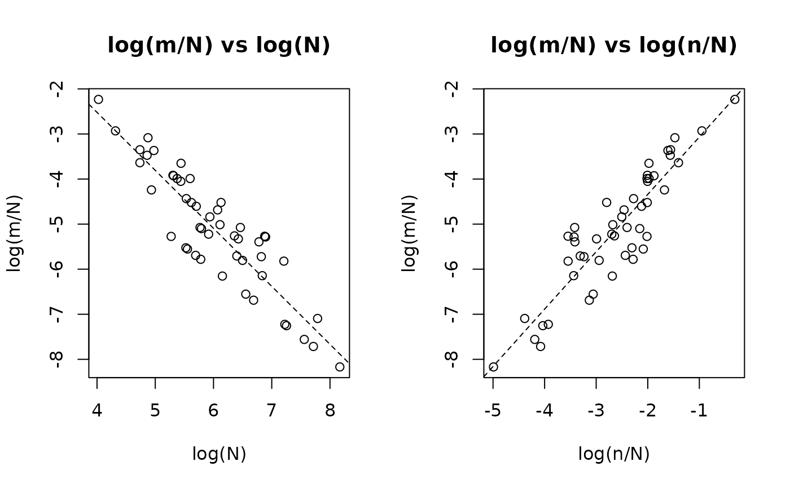

Produces two side-by-side log-log scatterplots that visualise the marginal relationships underlying the power-law model \(\log(\mu/N) = (\alpha - 1)\log N + \beta\log(n/N)\), following Zhang (2008, Figures 5, 8, 11):
Arguments
- object
An object of class
"uncounted".- ...
Additional graphical arguments passed to
plot.
Details
log(m/N) vs log(N): Explores the scaling of the apprehension rate with total population size. The OLS slope approximates \(\alpha - 1\). A slope near zero (\(\alpha \approx 1\)) means the rate is independent of population size.
log(m/N) vs log(n/N): Explores the relationship between the apprehension rate and the auxiliary-to-population ratio. The OLS slope approximates \(\beta\).
Observations with \(m = 0\) or \(n = 0\) are excluded (undefined on the log scale). OLS regression lines are overlaid as visual guides.
References
Zhang, L.-C. (2008). Developing methods for determining the number of unauthorized foreigners in Norway. Documents 2008/11, Statistics Norway. https://www.ssb.no/a/english/publikasjoner/pdf/doc_200811_en/doc_200811_en.pdf
Examples
set.seed(123)
df <- data.frame(
N = round(exp(rnorm(50, 6, 1))),
n = rpois(50, lambda = 30)
)
df$m <- rpois(50, lambda = df$N^0.5 * (df$n / df$N)^0.8)
fit <- estimate_hidden_pop(data = df, observed = ~m, auxiliary = ~n,
reference_pop = ~N, method = "poisson")
plot_explore(fit)
